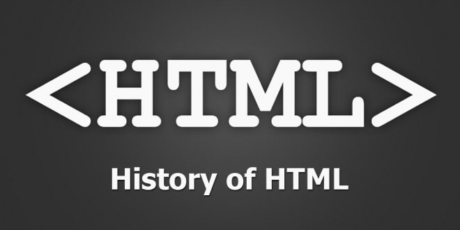

Under de första 5 åren
HTMLs historia Under de första fem åren (1990-1995) gick HTML igenom ett antal revisioner och fick ett antal tillägg, främst värd först på CERN och sedan på IETF. Med skapandet av W3C ändrades HTMLs utvecklingsplats igen. Ett första misslyckat försök att utöka HTML 1995, känd som HTML 3.0, gjorde sedan plats för en mer praktisk metod känd som HTML 3.2, som slutfördes 1997. HTML4 följde snabbt senare samma år. Året därpå beslutade W3C-medlemskapet att sluta utveckla HTML och istället börja arbeta på en XML-baserad motsvarighet, kallad XHTML. Detta försök började med en omformulering av HTML4 i XML, känd som XHTML 1.0, som inte lade till några nya funktioner förutom den nya serialiseringen, och som slutfördes 2000. Efter XHTML 1.0 vändes W3C:s fokus till att göra det lättare för andra arbetsgrupper att utöka XHTML, under flaggan XHTML Modularization. Samtidigt med detta arbetade W3C också på ett nytt språk som inte var kompatibelt med de tidigare HTML- och XHTML-språken, kallar det XHTML2.
Runt den tid då HTMLs utveckling stoppades 1998 specificerades delar av API:et för HTML utvecklat av webbläsarleverantörer och publicerades under namnet DOM Level 1 (1998) och DOM Level 2 Core och DOM Level 2 HTML (med start 2000 och som kulminerade 2003). Dessa ansträngningar försvann sedan, med några DOM nivå 3-specifikationer publicerade 2004 men arbetsgruppen stängdes innan alla nivå 3-utkast var färdiga. 2003 väckte publiceringen av XForms, en teknik som var positionerad som nästa generation av webbformulär, ett förnyat intresse för att utveckla HTML i sig, snarare än att hitta ersättare för det. Detta intresse kom från insikten att XML:s distribution som webbteknik var begränsad till helt nya teknologier (som RSS och senare Atom), snarare än som en ersättning för befintliga distribuerade tekniker (som HTML).
XHTML1 och DOM2 HTML. Det innebar också att inkludera betydligt fler detaljer än vad som tidigare ansetts vara normen. 2006 indikerade W3C ett intresse av att trots allt delta i utvecklingen av HTML5, och 2007 bildade W3C en arbetsgrupp för att arbeta med WHATWG om utvecklingen av HTML5-specifikationen. Apple, Mozilla och Opera tillät W3C att publicera specifikationen under W3C-upphovsrätten, samtidigt som de behöll en version med den mindre restriktiva licensen på WHATWG-webbplatsen. Under ett antal år arbetade sedan båda grupperna tillsammans. 2011 kom dock grupperna till slutsatsen att de hade olika mål: W3C ville publicera en "färdig" version av "HTML5", medan WHATWG ville fortsätta arbeta med en Living Standard för HTML, med kontinuerligt underhåll av specifikationen istället för att frysa den i ett tillstånd med kända problem och lägga till nya funktioner efter behov för att utveckla plattformen. Under 2019 undertecknade WHATWG och W3C ett avtal om att samarbeta om en enda version av HTML framöver: HTML5.